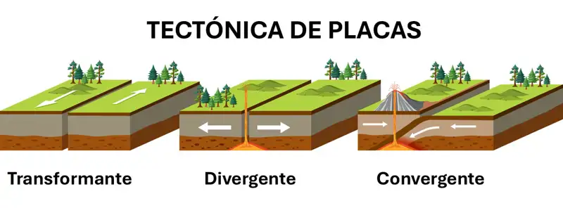
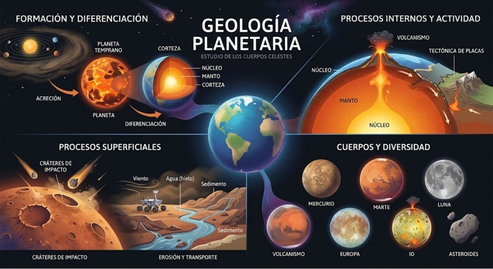
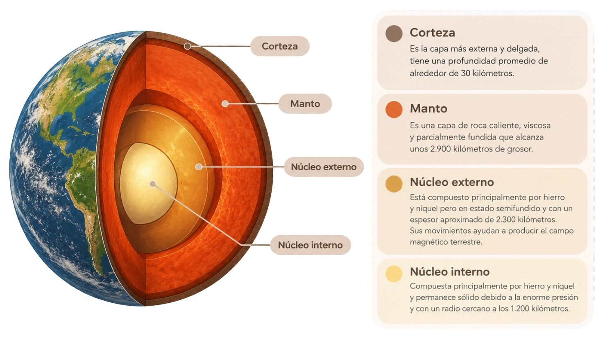
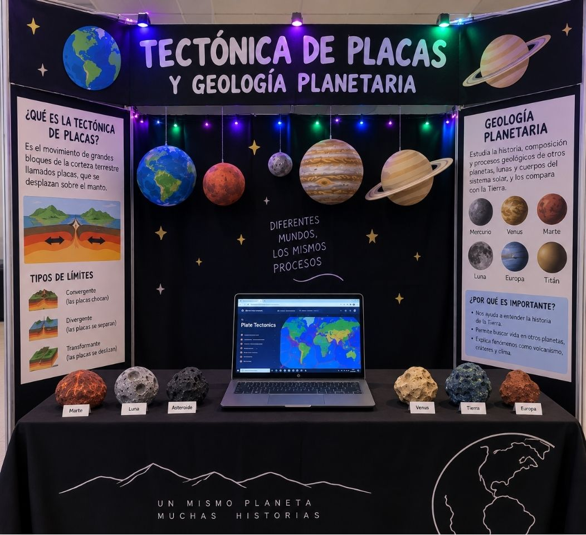

Límites divergentes
Ocurren cuando dos placas se separan, permitiendo que el material del manto ascienda y pueda formar nueva corteza terrestre.
EXPLORANDO EL UNIVERSO
¡Descubre cómo la Tierra y otros planetas cuentan su historia a través de sus rocas, placas y volcanes!
Explorar proyectoLa tectónica de placas es la teoría que describe cómo la capa externa de la Tierra está dividida en grandes fragmentos rígidos que se mueven sobre el manto terrestre, provocando fenómenos geológicos como terremotos, erupciones volcánicas y la formación de montañas. Por otro lado, la geología planetaria estudia la composición, el relieve y la evolución de cuerpos sólidos del sistema solar, como planetas, lunas y asteroides.
Comprender las placas tectónicas permite explicar cómo ha cambiado la superficie de nuestro planeta a lo largo de millones de años y ayuda a estudiar fenómenos naturales como terremotos y erupciones volcánicas. La geología planetaria permite comparar la Tierra con otros mundos y descubrir por qué algunos presentan volcanes, montañas, cráteres o evidencias de actividad interna.
En este sitio web, el visitante encontrará información sobre el funcionamiento de las placas tectónicas, la geología de otros cuerpos celestes y datos científicos sobre la estructura terrestre. Además, podrá interactuar con una simulación tridimensional que muestra cómo se separan las placas y permite observar una representación del magma del interior de la Tierra.
Comprender el funcionamiento de la tectónica de placas y los principios de la geología planetaria, reconociendo su importancia para explicar la evolución de la Tierra y otros cuerpos del sistema solar.
La tectónica de placas es la teoría que explica que la superficie rígida de la Tierra, conocida como litosfera, está dividida en grandes bloques llamados placas tectónicas. Estas se desplazan lentamente sobre una zona más deformable del manto superior, impulsadas por procesos relacionados con el calor interno terrestre y las fuerzas gravitacionales.
Cuando las placas se separan, chocan o se deslizan unas sobre otras, producen diferentes fenómenos geológicos, como terremotos, volcanes, cordilleras y fosas oceánicas. Estos movimientos transforman constantemente la superficie de nuestro planeta.

Ocurren cuando dos placas se separan, permitiendo que el material del manto ascienda y pueda formar nueva corteza terrestre.
Se producen cuando dos placas se acercan y colisionan. Pueden formar montañas, volcanes y fosas oceánicas.
Se presentan cuando dos placas se deslizan lateralmente una respecto a la otra, generando frecuentemente terremotos.
La geología planetaria es la ciencia que estudia la composición, estructura, superficie y evolución geológica de los planetas, lunas, asteroides y otros cuerpos sólidos del sistema solar. A través del análisis de cráteres, volcanes, montañas, minerales y otras formaciones, los científicos investigan cómo se originaron y transformaron estos mundos.
Por ejemplo, Marte presenta volcanes gigantes como el Monte Olimpo, mientras que la Luna conserva numerosos cráteres formados por impactos. Estos elementos permiten estudiar la historia geológica de cada cuerpo celeste y compararla con la de la Tierra.

La Tierra está formada por varias capas internas. La corteza es la capa externa y delgada; el manto constituye la mayor parte del volumen terrestre y está compuesto por rocas sólidas que pueden deformarse lentamente. El núcleo externo es principalmente líquido y el núcleo interno es sólido. El calor interno participa en los procesos que impulsan la dinámica terrestre.

Las siguientes magnitudes permiten comprender mejor las dimensiones y los procesos de nuestro planeta.
6.371 km
Radio medio de la Tierra.
~100 km
Espesor aproximado de la litosfera en algunas regiones, aunque varía ampliamente.
7
Grandes placas tectónicas, además de numerosas placas menores.
~5.500 °C
Temperatura aproximada del núcleo interno terrestre.
Explora un modelo tridimensional de la Tierra y observa una representación simplificada de la separación de sus placas tectónicas. Utiliza el control deslizante para modificar la distancia entre los sectores y visualizar el interior incandescente.
0% (Placas unidas)
La simulación divide el planeta en ocho sectores esféricos que representan placas simplificadas. Al desplazar el control, los sectores se alejan radialmente del centro y dejan ver la esfera de magma que se encuentra en el interior del modelo.
Este modelo es educativo: no representa con exactitud las formas, tamaños, velocidades ni los límites reales de las placas tectónicas.
En nuestro stand, los visitantes podrán conocer cómo se transforma la superficie terrestre mediante explicaciones, recursos visuales y un experimento físico relacionado con la tectónica de placas. La página web complementa esta experiencia con información científica y una simulación interactiva 3D.
| El experimento físico muestra | El sitio web muestra |
|---|---|
| El movimiento y la interacción entre las placas. | Una representación tridimensional de los sectores terrestres. |
| Una explicación visual de los procesos geológicos. | Información sobre el interior terrestre y la geología planetaria. |
| La participación directa de los visitantes. | Una simulación interactiva con control de separación. |

La tectónica de placas y la geología planetaria permiten comprender los procesos que han formado y transformado la Tierra y otros cuerpos del sistema solar. El estudio de estos fenómenos ayuda a explicar el origen de montañas, volcanes, terremotos y cráteres, así como la evolución de las superficies planetarias. Mediante los modelos y las simulaciones, es posible representar algunos de estos procesos y acercar los conocimientos científicos a los visitantes.